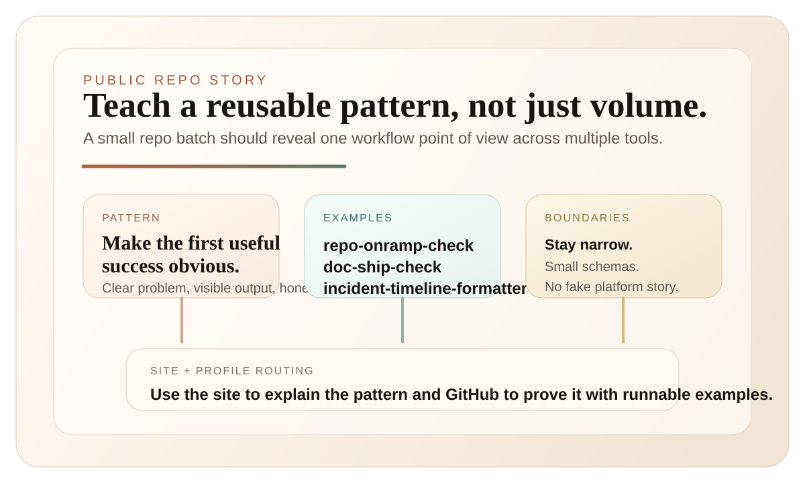

Small Repo Batches Should Teach a Pattern
A good collection of small public repos should reveal a coherent workflow point of view, not just advertise that you made a lot of things.
Posting a batch of small repos can easily turn into a quantity signal. That is usually the weakest version of the work. A better version is when the batch teaches a pattern. If someone lands on the profile or the site, they should be able to tell pretty quickly what kind of workflow problems I like, what level of scope I prefer, and why these tools exist as a set instead of as random side projects.
What I want the batch to do
I want a repo batch to make three things legible:
- the repeated workflow problem underneath the tools
- the shape of solution I tend to prefer
- the boundaries where I deliberately stop
That is what turns a pile of utilities into a usable public surface. repo-onramp-check, doc-ship-check, and incident-timeline-formatter all solve different problems, but they point at the same preference: narrow tools that make the messy middle of real work easier to see and easier to finish.

Variety is only useful if the pattern still holds
Some breadth is good. It helps show that the habit travels across domains. But breadth without a through-line mostly reads as miscellaneous output. The through-line I want is pretty simple:
- make the first useful success easy to reach
- keep the schema or workflow small enough to understand
- show the output shape early
- be honest about what the tool does not do
That is true for repo quality checks, release-note diffs, decision journals, incident formatting, and even the one-page canvas. Different surface area. Same bias toward structure, clarity, and a short path to use.
The site should do the routing work
This is also why I care about the site and GitHub profile as a pair. GitHub shows the proof layer. The site should do the routing. It should tell someone where to start, which notes explain the thinking, and which repos are the best examples of that point of view. If the site just repeats the repo list, it is wasting the opportunity. If the profile just lists links without a point of view, it is doing the same thing in reverse.
Small projects still need curation
I like fun side projects, but I do not think "fun" means random. The good ones usually test a reusable idea: stable timelines, cleaner repo onboarding, tighter one-page planning, or lighter-weight document checks. That is enough. Small projects do not need a giant platform thesis. They just need to teach something consistent about how you approach work.